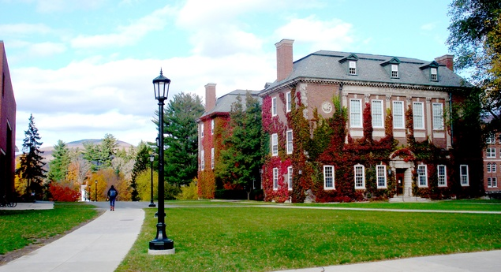

Williams is a liberal arts college located in Williamstown, Massachusetts, which is 158 miles away from Boston and relatively isolated. The college is integrated into the town and is in a rural setting. Williams boasts a 4-1-4 academic schedule; students take a semester of classes in fall. Then they spend all of January exploring their own intellectual interests before returning to a semester schedule of classes. Williams has a relatively large student body size relative to other liberal arts college. Their 2,077 students make-up a 7:1 student faculty ratio on Williams' campus. The top five most popular majors are english, history, math, economics, and polisci. Williams' adorable mascot, the Eph (pronounced 'eef') leads the school to a number of D3 athletic championships. Williams abolished Greek Life in the 1980s.
